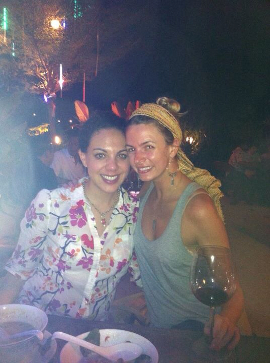
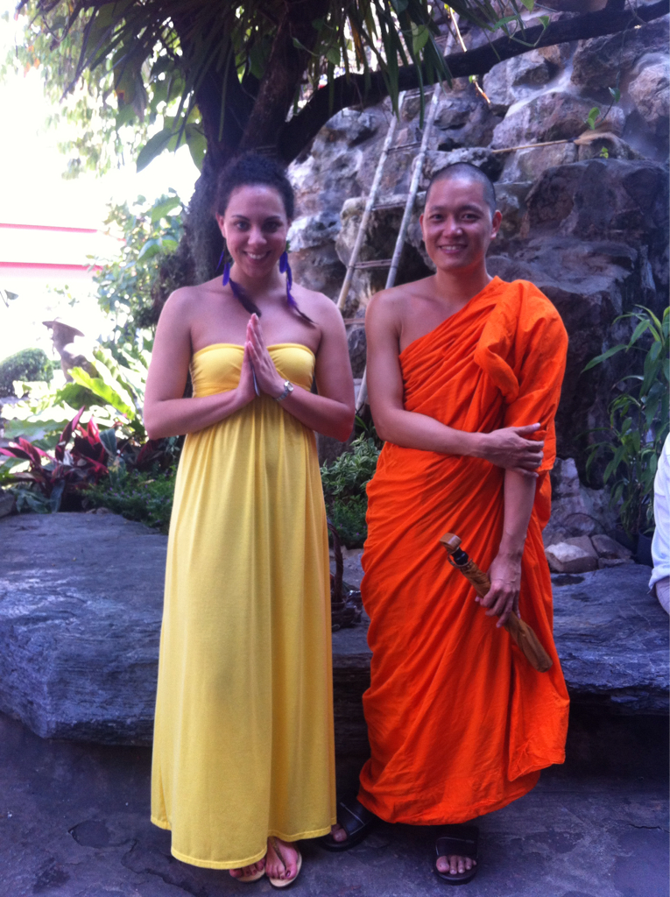

Bangkok
One Night In Bangkok
After a week of freezing (LITerally freezing) cold weather, I was delighted to get off the plane in Thailand in 90 degree heat... that is until I realized I was still outfitted for 20. Always the pre-planner, I swapped my boots for my Rainbows and my jeans for shorts and we were ready to go. Sadly I was already, yet again, drenched in my own sweat as I paced around the airport trying to figure out what in the world I was doing and where in the world I was going.
Within moments I had a message from Stephanie, my dear friend and dinner date (along with Cari!) for the evening. She had been in Thailand for 18 days and prior to her leaving, actually months ago, we planned to meet up if it all worked out. The stars aligned and, yay!, it all worked out. We landed within an hour of each other and headed directly to the hotel to enjoy some chilled wine and spicy curry. We swapped stories about our trips, mine just beginning and hers coming to a close, and then hunkered down for the night.
Thanks for the amazing evening and place to stay, ladies! And thanks for the downtown hotel rec... more on that to come after I'm leaving (I'm not trying to have weirdos following me around, hey now. I am no fool.). Love you bunches and can't wait to see you again when I come home in March.
Do you think...? Oh my gosh. Did they just see...? I...
...just biffed it on the street. Five times. Not once. FIVE times. Five times.
It's not a new thing for me to lose it. Usually, I will give myself some credit here, it's in high heels. Leaving the house when my mom is present all I hear behind me as I head towards my car is, "Careful! Those steps are... oh, maybe you should take those off until you get in? Uneven!" It's completely the norm. I fall all of the time. I'm tripping on a nonexistent crack in the street, over my own toes that I don't lift up properly, over the fact that the high heels I'm wearing are four inches tall and they don't quite jive with my utter lack of equilibrium. I have no balance.
Well, enter an uneven paved road that I've never trod upon and all bets are off. It first happened about 100 yards away from the hotel. Ohp! Looks like I got caught on that lifted piece of cement, it's time to flail forward elegantly and purposefully. Of course I meant to do this! No. Make that... oh, just keep walking forward. This happened, no kidding, five times on the way to get my toes done. Hello! WHAT was my problem? And then I never know how to handle it. Do you look around at those around you and awkwardly shrug... Those streets, they'll come up and get ya!
So I do nothing. Making the situation even more uncomfortable for me and the viewer (and always the sweet Thai people who rescue me before the real mortification has a chance to begin), I act like it didn't happen. (!?) I keep walking as though every three blocks or so I want to skip it out... or offer it up!... or do anything but verge on face planting it into a street that smells of pee, partially cooked meat, and faux leather. I did NOT just completely trip over that curb, cement block, bush, nothing there. I didn't. But I so did. And by the end of the night, when it happened for the last time, I was walking like a resolute moron. I'm not sure what THAT looked like either, but it could not be described as "cute" or even "normal".
I was so scared that I would fall again (in my flip flops, did I mention that yet?), that I walked with my toes gripping the front of them with a power not unlike a vice grip. I bowed out my legs to prepare for any unforeseen obstacles coming my way. Now, I blame my Rainbows. They aren't supposed to get wet and of course I have worn them everywhere. This being said, they were slippery! I was slipping all over those suckers! I hypothesize that 14% of my problem was those darn flips.
After stopping at approximately eight massage spots in a 30 minute radius of my hotel, I was pointed in the direction of, seemingly, the ONE fish spa left in this city (or maybe just my area). Once inside I proudly announced that I was "here for the fish spa!" You guys. You. Guys. I am not sure I have ever EVER experienced something so traumatic. I was so off-put by the whole situation that I sat with my feet above the tank for about 20 minutes. I had paid for 15.
Grabbing anyone that would come near me, the women of the spa and I bonded over my petrified reaction to little buggers coming and swimming and nibbling... all over my feet. What a laugh! Proclaiming "I think I'm going to pee in my pants!", I realized that I was getting a little dramatic... but it was true! I almost did out both of anxiety and dread. I had myself imagining I was an Indiana Jones-type character and this was my vat of spiders and snakes; I had taken it to otherworldly levels. Tea was brought to me to hopefully offer a calming effect. The ladies held my hand while I turned my vice grip attentions to their upper arms, knees, and anything within my reach.
Finally, after about a half hour, I just did it. I did it because one day I may be asked to do it on The Amazing Race (which I voiced to anyone listening). It was both mortifying and tickly; enjoyable is not an adjective that I would use to describe it. Meanwhile, I think I'll go back today and have them do it again. Fifteen minutes, three bucks, and my feet haven't been softer. Adventure (though supremely uncomfortable) success!
Since I had gone through one fully dire ordeal in the name of local custom, I allowed them to talk me into a massage (twist my arm) to go with my pedi. They refilled my tea, ensured that my potential heart attack was at bay, covered me with a blanket, and went to town. All of this: toes, full massage, fish feeding... $12. Twelve American dollars. I'm in. I'm doing it again today.
Aware of my walking troubles on my way to Fish Spa, I took gracious care with the bowed legs and the vice gripping to not trip this time around. At ten o'clock, the city was alive and I did not want to lose it here. Well, life happens! One block away from the hotel, tropical storm Betty flew in and the rains came down. Oh heck. My flip flops can't get wet! The 14%! I was in for it. The vice grip tightened and I then took to Plan B which was to walk like there was something between my legs... Seriously. I was narrowly balancing on what others took as a full street but I viewed as two, sopping wet, leather sleds.
Hopping under awnings, I gathered my last, final bit of wherewithal and bolted the remaining two football fields of distance between me and the dryness of the hotel. Being that it's super hot outside, without fail, the hotel was approximately 15 degrees inside when I dashed in. Good grief, Charlie Brown! We're not on the sun, turn up the heat in here!
Needless to say, my day was spectacular. Every moment I loved and I'm glad I bit the bullet and allowed the nibbling and ignored the falling. It will happen, as it happens every day. I jumped into the shower to get warm and headed to bed, ready for Friday. There are some surprises in store and it's time to go find 'em...
Well fancy meeting you here...
It's true! Surprise! Friday was the day that the ckpy went global (round one) and I got to meet up with Michelle and Jigger for the day. Huzzah!
Having arranged our dates (me specifically so I wouldn't miss her... that's why no NSM for this girl) to align so that we could globe trot together, I was looking forward to exploring a city she had been to and Jigger and I had not. Finally someone to take pictures of me without awkwardness and language barriers! Someone would now be present IN my pictures with me! What a day! We spent most of it on our feet... even our food we took with us on our travels as we hightailed it around the city. We had a lot to see and the days don't get longer across the world, let me tell you.
We met up, like star-crossed lovers (but not), in a station of the Bangkok SkyTrain and grabbed a quick bubble tea for the road. Or, at least for the stretch of pathway that led from the kiosk to the entrance to the train. And by pathway I mean five steps. No food or drinks allowed on the train!? Bah! I guess we should have noted the extra large sign informing us of that prior...
Now, Mich and Jigs are my kind of sightseers... Like me, they feel that, overall, once you've seen one temple/palace/ wat/summer home, you've seen them all.* We hopped the ferry (well, tour ferry; more on over there >>) with our day pass and prepared to see the Grand Palace, Reclining Buddha, and Wat Arun. Michelle had the timing down and we blazed through each one, giving them their adequate and due attention of course, while taking in the local sights and sounds of the river market.
We grabbed mango on the side of the road, slipped into a small shop for a traditional Thai lunch, and peeked at the various food vendors along our way. There will grilled fish of all kinds; heads on, eyes in. There is no time to waste good protein! I spotted a t-shirt that I just had to have but, alas, it was for a child around the age of three. Wardrobe fail. My buddha belly would ne'er be acceptable popping out of that...
The landmarks were absolutely beautiful. There was the emerald buddha at the Palace (sadly no pictures allowed) and the Reclining Buddha was unlike anything I've seen. Good heavens! It's huge! Huge! What is the necessity there?! Gargantuan! I was shocked and awed at the sight. It was tremendous. And the Grand Palace was another highlight that took my breath away. The intracacy of the work and the stones they used was staggering; I've only seen it's match in Italy with the detail of the frescoes there.
After a few good hours in the hot Thai sun, we headed back to the hotel to plot our next adventure. Well, seeing that we'd been walking around with hardly a breather, a Thai massage was just the ticket to relax us and move us into the night. We headed to Michelle's staple shop and signed ourselves up for three massages, all together (with curtain separating of course). It was grand! It had to be, for about $14, the best massage I've had and it was so fun sharing a corner with those two (and Jigger and his ill-fitting shirt...)!
Now that we were really ready get into Bangkok, we trapsed around the corner and over to the Night Market.** Stimulation overload. I think I'm good there for one visit in my life... don't need to go back. Unless I need a Swatch; they seem to have a plentiful supply there. Meanwhile, there is a gem that I purchsed right off and you will see it below. Michael! You know I love my Michael... Anyway, we bought some things and haggled a bit, almost got chewed out in Thai - it was great! What a fantastic experience!
To save from backtracking, we put dinner on hold to take in the market. So, obviously, we were starving by the time we were finished... at nine o'clock! God bless his heart, the concierge at Le Meridien (where Mich and Jigs were) gave us some recommendations that didn't quite fit the bill. By 11.15 we found ourselves at a neutral SkyTrain stop, with two tuk tuk rides under our belt, having walked at least a mile around the city, experiencing a behind the scenes tour of Bangkok... and no dinner. So, tired and hungry, we parted - to meet again in the USA - and each took our trains, going our separate ways.
I love my friends. It was such a wonderful, warm, sunny, day full of laughter and jokes. It just felt right and it was just like home... only in Thailand! I grabbed some food at the hotel, showered off the afternoon and evening, and tucked myself in. The next adventure of the tour starts tomorrow and I'm betting it's going to be grand...
*No, Mark, this is completely different from what you're thinking. Taking in the MET in New York does not equate to "seeing all of the museums" and therefore forgoing a visit the British Museum come time to go to Londontown...
**I will not take this moment to soap box my feelings about prostitution or Bangkok's red light distict or even slavery. I will say that it is one of the saddest things I will ever come across in this life and it is to my great disappointment that American men give reason for there to be an industry at all. How embarrassing for us as a representative whole.